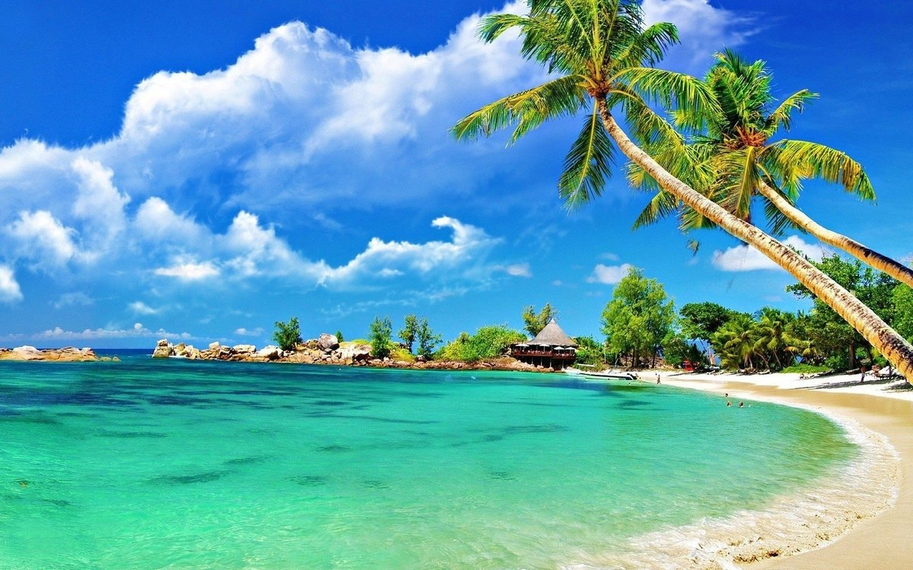
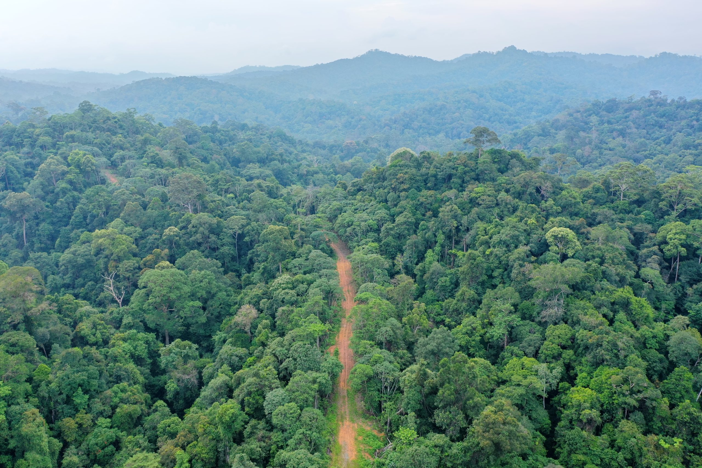
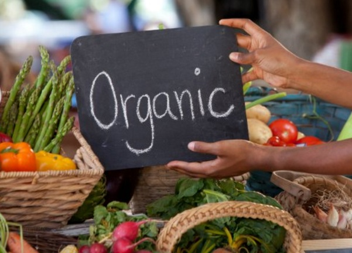
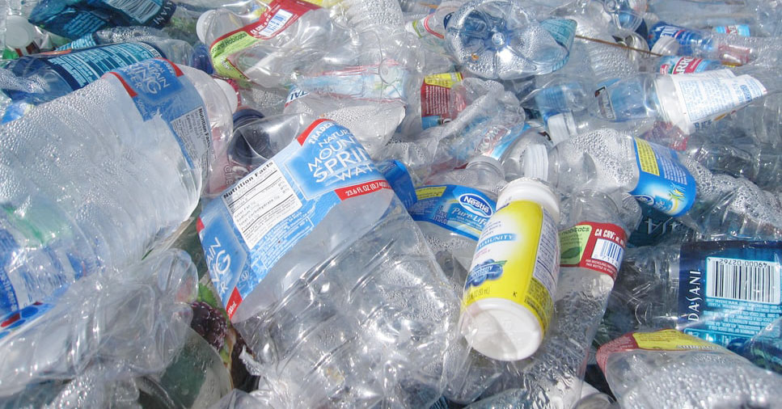
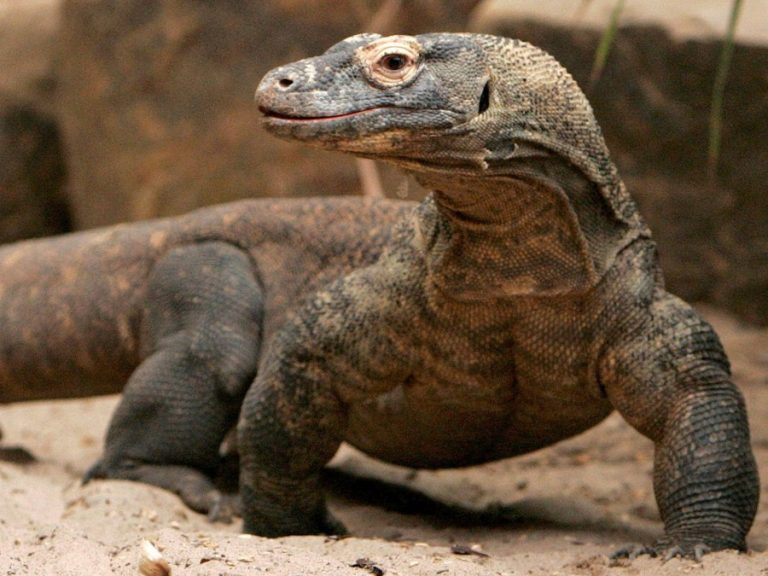

Keindahan Gunung Hijau di Aceh
Mengenal pesona alam pegunungan hijau yang mempesona di Aceh dan potensi ekowisata yang dapat dikembangkan.
Read MoreHome / Blog

Mengenal pesona alam pegunungan hijau yang mempesona di Aceh dan potensi ekowisata yang dapat dikembangkan.
Read More
Langkah-langkah sederhana untuk menjaga kebersihan pantai dan mengurangi sampah plastik di laut.
Read More
Peran penting hutan tropis di Sumatra dalam menjaga keseimbangan ekosistem dan keanekaragaman hayati.
Read More
Mengenal konsep ekowisata laut dan bagaimana wisatawan dapat berkontribusi pada pelestarian terumbu karang.
Read More
Manfaat pertanian organik dalam menjaga kesuburan tanah dan mendukung kesehatan manusia.
Read More
Upaya nyata untuk mengurangi sampah plastik di sungai demi lingkungan yang lebih bersih dan sehat.
Read More
Peran masyarakat dalam melindungi hewan langka seperti harimau sumatra dan badak jawa agar tidak punah.
Read More